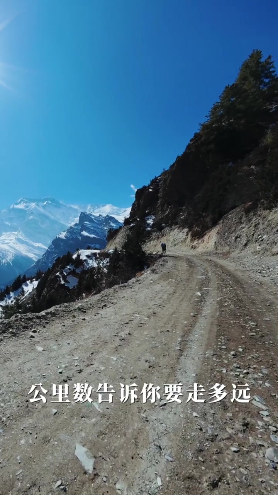
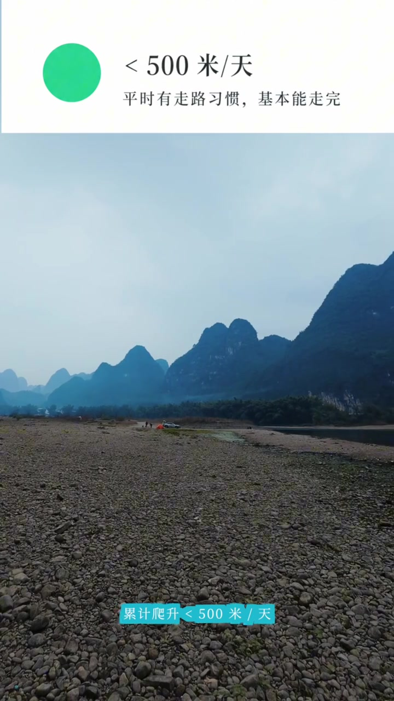
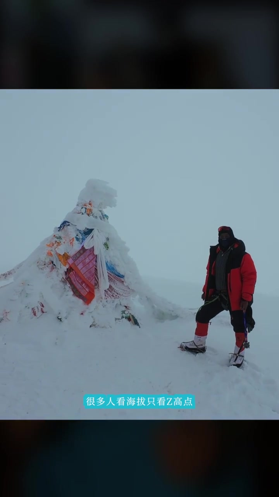
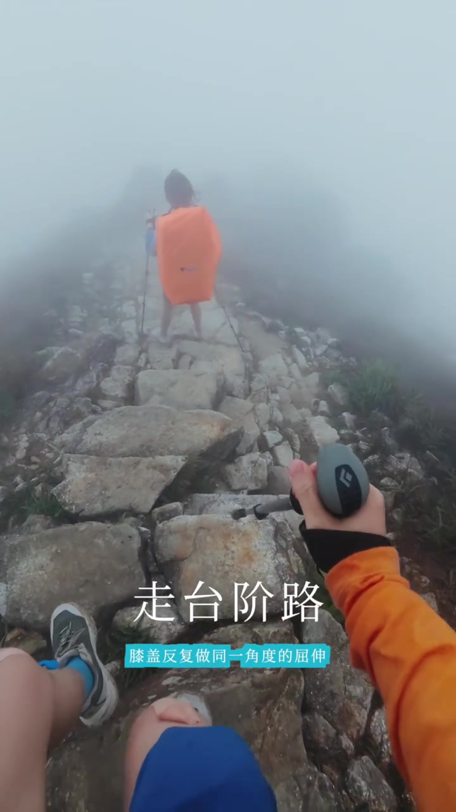

开场
「15 公里，中等难度」很多时候是假象
视频一开头就戳常见描述：别人推荐路线，最爱写「15 公里，中等难度」。作者立刻反问——同样是 15 公里，累计爬升 300 和累计爬升 1500，体感完全不是一回事。
她说自己以前也被「公里数」骗过；后来走完 EBC 超级大环、珠峰东坡，又在香港反复走麦理浩径和凤凰径之后，才想把这件事讲清楚：判断一条路线，关键不在公里，而在另外三个数字。
Whisper 把「EBC 超级大环、珠峰东坡」听成「EBSA 超级大火岸、诸丰东坡」，把「麦理浩径和凤凰径」听成「麦迪浩金和凤凰金」。页末转录保留原始分段；正文按笔记文案与画面字幕校正理解。
自我介绍 · 00:19
14 年户外 + 运动康复视角的分享
作者自称一诺：有 14 年户外经验，同时学过运动康复。她把这次分享收成一句很具体的目标——下次看路线介绍，除了公里数，还要看哪三个数字。
指标一 · 00:29
累计爬升：比公里数更直接影响体力
第一个数字是累计爬升。公里数告诉你要走多远；累计爬升告诉你每走一步要花多少力气。她举了对比：15 公里但只爬 300，对徒步者来说接近休闲游；反过来只有 8 公里却爬将近 800，可能走到怀疑人生。

接着给出一套按「每天累计爬升」粗分的判断：
- 小于 500 米/天：平时有走路习惯，基本能走完
- 500–1000 米/天：需要规律日常运动，会累但可应对
- 1000 米以上/天：要提前做体能准备，不是临时起意就能走

她立刻补了一句边界：这不是绝对值，每个人身体状况不同；但它比「中等难度」四个字有用得多。
指标二 · 01:22
海拔：别只看最高点，看变化速度
第二个数字是海拔。很多人只看「最高海拔 4000」——作者认为这个信息本身几乎没用。真正要看的是：起点海拔，以及海拔上升的速度。

她用运动康复视角解释机制：海拔升高，血液含氧量下降，肌肉在缺氧环境下力量打折；同样坡度在高海拔可能多花 30%–50% 力气。缺氧还会拖累判断力和协调性——所以有人 3000 米以下走得飞快，一过 3500 就慢下来。
参考节奏：3000 米以下多数人适应几天就能正常走；3000–4000 米给身体 1–2 天适应；4000 米以上适应更长，每天上升不超过 500 米海拔比较安全。
指标三 · 02:11
路况：被忽略最多、却同样耗体力
第三个数字其实是「路况」这个变量。新手最容易忽略，但对体力的影响不亚于爬升。同样 10 公里，走台阶、碎石或泥路，身体消耗方式完全不同。

- 台阶路：膝盖反复同一角度屈伸，约 3 公里后髌骨压力开始累积
- 碎石坡：脚底不平，脚踝持续微调，小腿和足底小肌群高负荷
- 泥路/湿滑：摩擦力不稳，核心被迫收紧维持平衡，核心会比预期更早疲劳
她还补了一个珠峰东坡暴雪的例子：雪深到膝盖时，体力消耗可达平时的两到三倍——不只因为海拔，还因为每一步都要把脚从雪里拔出来。
收束 · 02:55
下次看路线，先问自己三个问题
视频收尾把三个指标压成自检清单：累计爬升多少、有没有超过平时运动量；起点海拔多少、一天要上升多少；路面是台阶、碎石还是泥路。三个数字都对得上自己的体能，才是真正适合自己的路线。
这一趟视频发生了什么
从「15 公里中等难度」的假安全感出发，作者依次展开累计爬升、海拔变化速度与路况三个维度，最后用三问清单把抽象难度翻译成可对照的体能与准备决策。语气是纪实分享，数字阈值是个人经验参考，不是绝对标准。